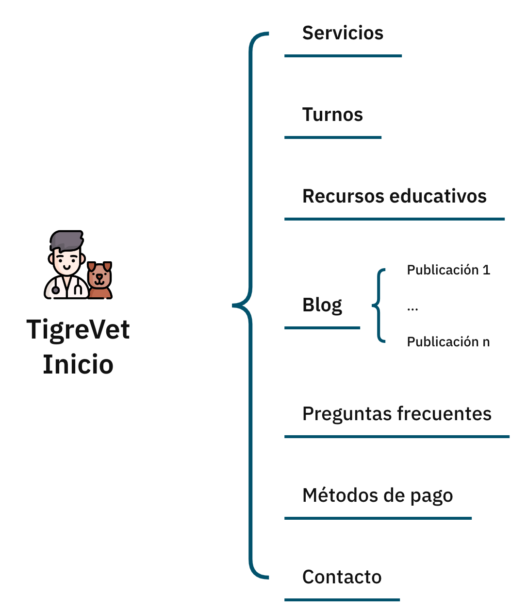
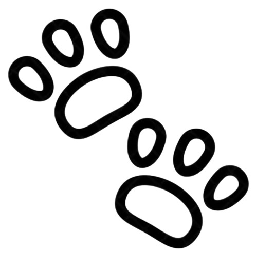

Avances del proyecto TigreVet
Datos del proyecto
Nombre del sitio: TigreVet
Slogan: Cuidando de tu mascota con amor y profesionalismo.
Github: https://github.com/pacevedoareco/tigrevet
Prototipos:
Figma desktop
Figma mobile
Roles de los integrantes
- Diseño:
Ignacio Caprara
Pablo Acevedo Areco - Programación:
Pablo Acevedo Areco
Luciano Céspedes - Maquetado y comunicación:
Nahuel Asim
Franco D'Atri
Mapa del sitio
Propuesta del sitio
TigreVet es una clínica veterinaria dedicada al cuidado integral de mascotas y a la conservación de la fauna local en la región de Tigre. Nuestro sitio web tiene como objetivo ofrecer una plataforma intuitiva y completa donde los propietarios de animales puedan conocer en detalle nuestros servicios veterinarios y acceder a una amplia variedad de recursos educativos para el cuidado responsable de sus mascotas. El concepto del sitio gira en torno a la combinación del bienestar animal con el compromiso hacia la conservación de la fauna local. Para atraer tráfico, implementaremos estrategias como la creación de un blog actualizado con consejos y novedades sobre salud animal y conservación de la fauna.
Público objetivo
El sitio de TigreVet está dirigido a dueños de mascotas, principalmente adultos de entre 25 y 55 años, de nivel socioeconómico medio a alto, que buscan servicios veterinarios de calidad y recursos educativos sobre el cuidado responsable de sus animales. El público objetivo incluye tanto familias como individuos, amantes de los animales, y personas preocupadas por la conservación de la fauna local en Tigre. Este público valora el bienestar animal y la sostenibilidad ambiental. El sitio web se adapta a sus necesidades ofreciendo información clara sobre nuestros servicios, consejos prácticos y recursos especializados, todo en un formato accesible e intuitivo que fomenta la educación y el compromiso con la naturaleza.
Identidad visual
Esta caja, por ejemplo, tiene un gradiente de #5ab381b8 a #bbfdbcb0.
Tipografía: Usamos fuentes modernas y legibles (Open Sans y Playfair Display), con líneas suaves y curvas redondeadas, para que la lectura sea cómoda y atractiva en todos los dispositivos. Esto también ayuda a proyectar una imagen cercana y profesional, alineada con nuestra atención veterinaria de alta calidad.
Iconografía: El diseño del sitio utiliza íconos personalizados y gráficos redondeados que representan el mundo de las mascotas (huellas, mascotas felices). Predominan fotos de mascotas felices, veterinarios sonrientes, y escenas de la fauna local, para transmitir un ambiente de bienestar y cuidado.
Logo:
Favicon: